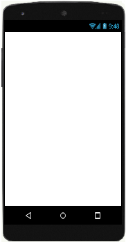

En parejas o en pequeños grupos, vais a hacer varios ejercicios para crear un programa con Scratch que active el movimiento del gato de forma que se cumplan las siguientes condiciones:
En parejas o en pequeños grupos, vais a hacer varios ejercicios para crear un programa con Scratch que active el movimiento del gato de forma que se cumplan las siguientes condiciones:
Antes de comenzar la actividad propiamente dicha, a ver si sois capaces de clasificar y explicar correctamente los bloques capturados de Scratch que se dan a continuación.
Para ello, por grupos, debéis escribir, cada uno en su cuaderno, lo siguiente:
Cuando hayáis terminado, comparadlo con el resto de la clase para ver si hay alguna diferencia y a qué se debe.
Es interesante que completéis vuestro trabajo con las aportaciones del resto de la clase.
Vais a trabajar por parejas.
A continuación tenéis una imagen de la pantalla de un móvil. Descargadla clicando sobre ella con el botón derecho del ratón y seleccionando la opción "guardar imagen como...".

Seguidamente, hay que entrar en Scratch, cargar esa imagen en el escenario y colocar sobre ella, dentro del espacio de pantalla, un botón que permita desencadenar la acción del gato cuando sea presionado.
Podéis decorar el resto del espacio disponible, si así lo creéis conveniente.
Cuando esté completo el ejercicio ponedlo en común con toda la clase y completad vuestro trabajo con las aportaciones que os parezcan más interesantes.
Seguid trabajando en pareja.
Antes de lanzaros a colocar bloques, tratad de representar gráficamente, de una manera esquemática, la secuencia de instrucciones que sería necesaria para completar la acción que pide el programa, es decir, haced un diagrama de flujo.
Cuando hayáis acabado el ejercicio ponedlo en común con toda la clase y completad vuestro trabajo con las aportaciones que os parezcan más interesantes.
En esta actividad, tenéis que poner en común la información que habéis representado en el diagrama de flujo. Para saber qué información tenéis que presentar es importante aprender a generar conclusiones. Es otro de los métodos, técnicas, “trucos” para llegar antes o de forma más fácil donde tú quieres. Esta estrategia es también reflexión. Y la generación de conclusiones te facilitará comprender toda la información y poder compartirla con tus compañeros y compañeras.
Para saber más sobre esta estrategia, puedes ir al siguiente enlace a la guía de la competencia de aprender a aprender.
Tómate el tiempo que necesites y recuerda que siempre puedes preguntarle al docente o a algún compañero o compañera cuando no entiendas algo.
¡Ánimo, que lo harás genial!
¿Qué nombre recibe una secuencia de instrucciones que puede ser programada?
Un conjunto de instrucciones que puedan ser programadas para un equipo electrónico con objeto de realizar una determinada tarea reciben el nombre de ALGORITMO.
Si quieres saber más sobre los algoritmos
De nuevo en pareja.
¡Ahora sí! Siguiendo las instrucciones que habéis pensado en el ejercicio anterior, haced el programa en Scratch utilizando los bloques que creáis convenientes para que haga lo previsto.
Cuando hayáis concluido, contad vuestras ideas al resto de la clase y apuntad en vuestro cuaderno las aportaciones que creáis más valiosas.
Es momento de pedirte una aportación personal.
Se trata de que crees otro elemento que permita detener el programa.
Por supuesto, debe cumplir un par de condiciones básicas:
El resto lo decides tú.
Tras realizar estas actividades habrás comprobado que posees algunas habilidades y recursos que te han permitido avanzar hasta donde te han dejado tus limitaciones personales en esta materia.
Ambas, habilidades y limitaciones, te definen y permiten que adaptes tus estrategias de cara a abordar con éxito los retos a los que te enfrentes.
En este caso particular puedes reflexionar sobre si los ejercicios que has realizado te han puesto en verdaderos apuros, o si, por el contrario, no has tenido especiales dificultades en completar tu trabajo.
Piensa también que sea cual sea tu caso, puedes buscar la razón del mismo, es decir, a qué crees que se debe tu éxito o tu limitación y si hay alguna forma de mejorar en lo sucesivo.
A pesar de que puedas pensar que no todo ha salido como esperabas e incluso de que hayas tenido varios errores, todo va bien.
No debes preocuparte ni tampoco desanimarte.
Cuando queremos aprender algo, lo normal es equivocarse al principio. Fallar forma parte de aprender. Ten en cuenta que estás empezando y es lógico que algunas preguntas te resulten difíciles, pero no pasa nada, es normal.
De los fracasos y equivocaciones siempre surgen nuevos aprendizajes que te van a ayudar a mejorar y progresar paso a paso.
Para aprender de tus errores sigue estos consejos:
¡Ánimo!
Obra publicada con Licencia Creative Commons Reconocimiento Compartir igual 4.0
{kind=link}